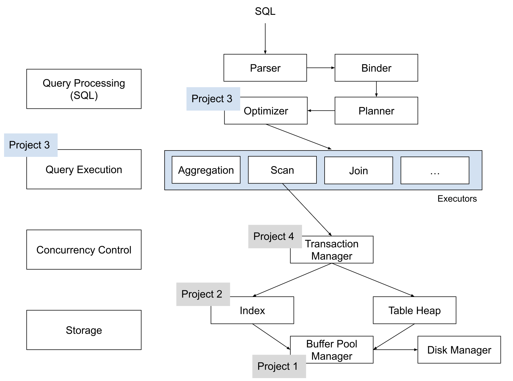

BusTub 养成记：从课程项目到 SQL 数据库
在今年八月份以前，BusTub (CMU 15-445/645 Database Systems 的课程项目) 只涵盖了数据库系统底层的部分：内存管理 (Project 1 Buffer Pool Manager)、存储引擎 (Project 2 Index)、执行器 (Project 3 Query Execution)，以及并发控制 (Project 4 Concurrency Control)。八月份我开始写 BusTub 的 Query Processing Layer，引入了一整套 SQL 层，实现了 BusTub 从课程项目到 SQL 数据库的飞跃。本学期开始，学生将可以直接使用 BusTub 跑 SQL 查询，验证自己实现的算子是否正确。

BusTub 的 SQL 层和本失败人士之前参与的 RisingLight / RisingWave 项目一脉相承，和 DuckDB 思路类似。Parser 使用 DuckDB 打包的 libpg_query。SQL 语句 parse 后，通过 binder 绑定 identifier 到各个实体，使用 planner 生成查询计划，而后使用 optimizer 优化成最终的查询计划。BusTub 的 整个 SQL 引擎目前支持简单的 join, aggregation 查询，uncorrelated subquery, 以及 CTE。值得一提的是，BusTub 现在还可以编译成 WASM，直接在浏览器里跑。我们将会把 BusTub 参考答案的编译产物通过网页的形式发放给学生，这样学生在做项目之前就可以大概了解 BusTub 的最终形态是什么样的。
从课程设计的角度来说，BusTub 的 Query Processing Layer 代码直接放在了 starter code 里，并且附带了一些基本的算子。学生在学期初就可以直接跑一些非常简单的 query (扫描 mock table, 过滤, 做简单的数学运算)；在写完 Buffer Pool Manager 之后就可以建表；写完 Index 后可以建索引；写完 Query Execution 之后，就基本可以跑常见的 SQL query 了。
虽然 BusTub Query Processing Layer 的代码已经没有太多可以改的地方了，但是我们也给学生保留了一些自由发挥的空间。学生可以实现新的 optimizer 规则，通过简单的变化让 query 可以更快执行，这是 query execution project 的拓展任务；与此同时也可以实现新的表达式，这将会是未来的 project 0 C++ primer。
本文主要是经验之谈，所以大多数内容都是流水账，比较枯燥，并没有什么干货。这篇文章可以看作一篇踩坑文章。本来 DB 界就没什么人会从头写 binder, planner, optimizer。如果有人真有机会写，也可以到那时回忆一下迟先生曾经踩过的坑，看看这篇文章。
下面我们将介绍 BusTub SQL 引擎的各个模块。Parser 就是 libpg_query，所以没有太多可以详细讲的地方，我们跳过这个部分。
Binder
通过 libpg_query 产生 Postgres AST 后，Binder 将会把这个 AST 改写成 BusTub 可以理解的一个更高级的 AST。在这个过程中，我们会将所有 identifier 解析成没有歧义的实体。我们以最简单的 select * 为例：
bustub> explain (binder) select * from __mock_table_1;
=== BINDER ===
BoundSelect {
table=BoundBaseTableRef { table=__mock_table_1, oid=0 },
columns=[__mock_table_1.colA, __mock_table_1.colB],
groupBy=[],
having=,
where=,
limit=,
offset=,
order_by=[],
is_distinct=false,
}
Binder 会在 catalog 里面查 __mock_table_1 的信息，将 __mock_table_1 绑定到具体的实体表上 (table_oid=0)。与此同时，将 select * 中的 * 展开成可以查到的所有列。这就完成了整个 binding 的过程。
我们再来看一个复杂的例子：
bustub> explain (binder) select colC from (select * from __mock_table_2, __mock_table_3);
=== BINDER ===
BoundSelect {
table=BoundSubqueryRef {
alias=__subquery#0,
subquery=BoundSelect {
table=BoundCrossProductRef { left=BoundBaseTableRef { table=__mock_table_2, oid=1 }, right=BoundBaseTableRef { table=__mock_table_3, oid=2 } },
columns=[__mock_table_2.colC, __mock_table_2.colD, __mock_table_3.colE, __mock_table_3.colF],
groupBy=[],
having=,
where=,
limit=,
offset=,
order_by=[],
is_distinct=false,
},
columns=["__mock_table_2.colC", "__mock_table_2.colD", "__mock_table_3.colE", "__mock_table_3.colF"],
},
columns=[__subquery#0.__mock_table_2.colC],
groupBy=[],
having=,
where=,
limit=,
offset=,
order_by=[],
is_distinct=false,
}
from 子句里面的 cross join 被绑定到了 BoundCrossProductRef 上，里面包含两个表。subquery 中的 * 被展开成了完整的列名 __mock_table_2.colC, __mock_table_2.colD, __mock_table_3.colE, __mock_table_3.colF。最外层的 colC 被解析成了 __subquery#0.__mock_table_2.colC。整个过程结束后，产生了一个没有歧义的 BusTub AST。这就是 binder 做的事情。
刚刚的讨论都是基于 from 里面只有 table 的前提讨论的。表达式的绑定在 from 绑定完进行。因此表达式总可以在对应的 table 里找到列。但是这里有一个稍微复杂的特例，需要在 from 绑定到一半的过程中做一些表达式的解析。
explain select * from (
a inner join b on a.cola = b.cola
) inner join c on a.cola = c.cola;
在绑定 a inner join b on a.cola = b.cola 的过程中，需要将 a.cola 和 b.colb 对应到具体的实体上。因此我们先将 a inner join b 绑定成一个没有 join 条件的 BoundJoinRef，而后用这个没有条件的 BoundJoinRef 作为 scope 绑定表达式，最后把表达式放回 BoundJoinRef 中。这个过程稍微有点 hack，但整体来看也比较干净。
另外有一些很多数据库都支持的神奇写法，在 BusTub 里面由于实现不太干净而没有支持。比如这个例子：
explain select max(x) as max_x from table group by c having max_x > 10
max_x 是一个 select 列表里面的 alias。在 binder 里面，我们将 select 看作一个整体来做绑定，在绑定这条语句的时候，identifier 绑定的范围仅仅是 from 子句中的表。因此，绑定 having 子句的过程中没有办法找到 max_x 这个 identifier。因此这条 query 在 BusTub 里面只能这样写：
explain select max(x) as max_x from table group by c having max(x) > 10
后来我查了一下 SQL 标准，标准也没有说支持在 having 子句里用 alias 🤣。
Planner
Planner 递归遍历 Binder 产生的 BusTub AST，产生一个初步的查询计划。吸收了之前项目里踩过的坑，并且为了方便实现、易于理解，BusTub 有这么几个设计点：
- 在 planner 和 binder 中使用两套表达式表示。两者表达式表示的最大区别是在引用列的方式上。Binder 中的表达式如果需要用一列，必须使用完整的列名。比如
__subquery#0.__mock_table_2.colC。Planner 中的表达式只能使用列的位置，比如#0.1，也就是第 0 个孩子的第 1 列。RisingLight 里面最头大的一点就是把这两种表示混在了一起，导致 planning 时的代码容易出错。BusTub 的设计很好的解决了这个问题。 - 不分 logical plan node 和 physical plan node。BusTub 的 SQL 层里面有 planner 和 optimizer。通常在这种设计中，planner 生成 logical plan node，然后通过 optimizer 框架做很多步优化产生 physical plan node。但是 BusTub 只是个教学项目，所以我们只有 physical plan node。Planner 会直接把 join plan 成 NestedLoopJoin，在 optimizer 里面改写成 HashJoin 或者 NestedIndexJoin。
- 相较于一年前的 BusTub，引入 filter, projection, values plan node。相对应的，在执行器中移除了各种“顺带做 filter”、“顺带做 projection”的部分。这些都独立成了单独的算子。values plan node 用于
insert into values ...语句。
目前 Planner 里面最为复杂的部分就是 aggregation 算子的 planning。首先我们规定 aggregation 算子只做 aggregate，不处理 having 子句、aggregation 后 projection。举个例子：
select x, max(y) + min(z) from t1 group by x having max(y) > 10;
曾经的 BusTub 可以用一个 aggregation 算子处理这一整条 query。在新的 SQL layer 的设计下，我们选择把它拆开，让一个算子只负责一件事情。现在，这条 query 会在 planner 阶段生成这样的执行计划：
bustub> explain (p) select x, max(y) + min(z) from t1 group by x having max(y) > 10;
=== PLANNER ===
Projection { exprs=[#0.0, #0.2+#0.3] }
Filter { predicate=#0.1>10 }
Agg { types=[max, max, min], aggregates=[#0.1, #0.1, #0.2], group_by=[#0.0] }
SeqScan { table=t1 }
一个简单的 aggregation 被分成了三个算子：
- Aggregation 算子计算
max(y) (in having), max(y), min(z)。 - Filter 算子处理 having 子句。
- Projection 算子做
max(y) + min(z)。
这样一来，每个算子的职责就变得相当清晰。但是这个 planning 的过程具体是怎么做的？在 planner 看到 max(y) + min(z) 这个表达式的时候，它第一眼只能看到这是一个 binary operation +。只有深入一层看看左手边是啥、右手边是啥，才能明白这个加法不是一个简单的加法，而是要在 aggregation 之后才能加。
这就是 plan 表达式的时候比较 tricky 的地方。Planner 中有一个 Context，用于表示当前是否在 plan aggregation 算子。如果是，plan 表达式时碰到聚合函数，就会将它替换成一个具体的列 (比如 #0.x)，然后将聚合函数加入 Context 的待聚合列表中。我们看一个具体的例子。现在假设我们在 plan select：
- 第一步，plan having 子句。首先看到是
>binary operation，而后看左手边是一个 max function call。于是我们将max(y)加入上下文中，并将这个位置的表达式替换成#0.1(第 0 列是 group by)。大于号右手边是一个正常的常量。 - 第二步，plan select list。x 是 group column，改写成
#0.0。max(y) + min(z)是一个 binary operation。看看加号左手边max(y)是一个聚合函数，加到列表中，并将这个位置的表达式替换成#0.2。加号右手边min(z)加到列表中，替换成#0.3。
这个流程完成后，我们就可以根据待聚合的列表和改写后的 select list / having 子句完成整个 aggregation 的 planning 了。
Optimizer
刚开始我并不打算给 BusTub 加上 optimizer，希望在 planner 阶段直接做完所有事情。但后来一想，加上 optimizer 可以让一些事情变得简单，也可以让学生有更多可以发挥的空间，因此还是加上了。
BusTub optimizer 是一个 rule-based 优化器。我们将不同的 rule 按顺序应用到当前的执行计划上，产生最终的执行计划。每一条 rule 由开发者手动实现，我们并不提供一个通用的改写框架。目前大部分 rule 实现的方式都是 bottom-up，自下而上改写整个 query plan。
在 starter code 中，optimizer 提供以下几个基本功能：
- 将 filter condition 合并到 NestedLoopJoin 里。比如 cross join
select * from a, b where a.x = b.y，在 planner 阶段会产生一个 predicate 为 true 的 NLJ 和一个a.x = b.y的 filter。在优化器中我们会把 filter 合并到 NLJ 里面。 - 如果有一个等值条件，且右表等值条件的列建了索引，就直接优化成 NestedIndexJoin。
- 如果有一个等值条件，但是没有索引，就优化成 HashJoin。
我绞尽脑汁想了三个 leaderboard test SQL，涵盖了我能想到的常见的优化 (join reordering, predicate push-down, column pruning)。学生可以发挥想象力在 optimizer 里面改写这三条 SQL，从而达到更高的执行效率。
执行器
由于加入了 Projection 和 Filter 算子，执行器部分也进行了不少的修改。大部分执行器的 predicate 属性被移除了。比如 TableScan 上面现在就没有 predicate 了。
与此同时去掉了 DistinctExecutor，改为由 planner 生成 group aggregation。
由于在 planner 里面，aggregation 的 having 由 filter 处理，聚合后的运算由 projection 处理，因此 aggregation 需要做的操作也变得简单了。
曾经 BusTub 最奇怪的地方是 schema 里面对每一列都保存了一个表达式。这个已经被去掉了。现在 Schema 就是描述算子输出每一列的类型，不再要求没个算子算完以后顺便做 projection。
执行器还加入了 Sort, TopN executor，这是项目开发以来第一个做排序的执行器。
后记
正当我做着把这一套 query processing layer 移植回 RisingLight 的美梦时，Runji 麻麻给 RisingLight 发了一个 Cascade optimizer 的 Pull Request。等到下次写 RusTub 的时候就不能用一套代码了 😭😭😭。
欢迎在 GitHub 对应的 issue 里参与本文的讨论。